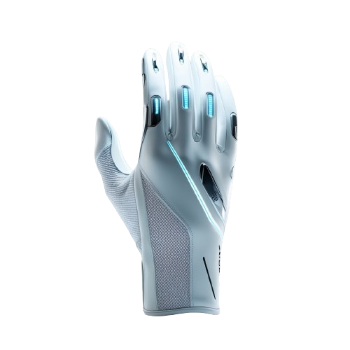

Tria-Guante GT

Bienvenido a la página del proyecto Tría-Guante GT.
Nos complace presentar nuestro prototipo y darle a conocer todas las características y funcionalidades que ofrece. A través de los botones de navegación, podrá explorar diferentes secciones de nuestra página:
Modelo Virtual: Conozca el diseño y funcionamiento de nuestro modelo digital.
Sensores Utilizados: Descubra los sensores que implementamos en nuestro proyecto.
Inteligencia Artificial (IA): Nuestra IA está dedicada a mejorar la funcionalidad del prototipo y aprender sobre los datos recogidos.
Base de Datos: Toda la información recolectada y gestionada en un solo lugar.
Equipo GT: Conozca a los integrantes que hicieron posible este proyecto.
Información: Datos adicionales y documentación de interés.